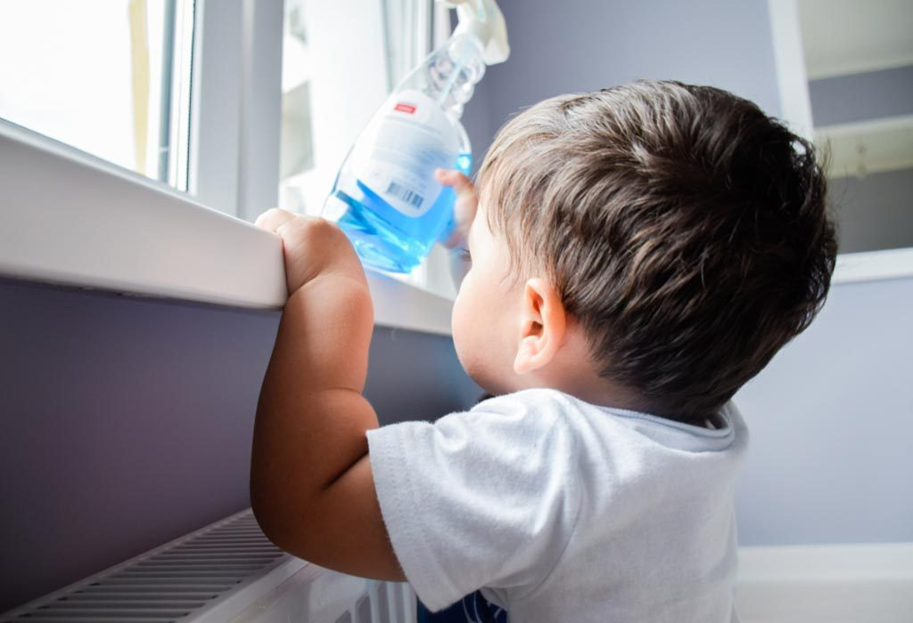
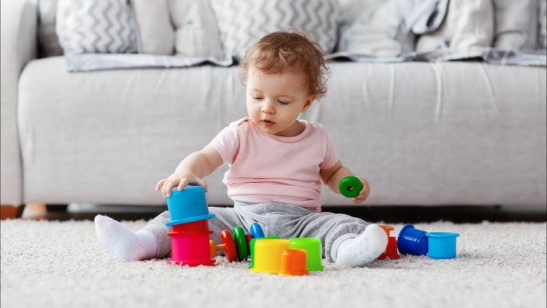

دليل شامل: البداية بالطعام الصلب من 6 أشهر
كل ما تحتاجين معرفته عن بداية الطعام الصلب لطفلك: الأطعمة المناسبة، الكميات، طريقة التقديم، والأخطاء الشائعة التي يجب تجنبها للحفاظ على صحة طفلك.
مكتبة شاملة للمقالات والنصائح الطبية والعملية لرعاية طفلك
كل ما تحتاجين معرفته عن بداية الطعام الصلب لطفلك: الأطعمة المناسبة، الكميات، طريقة التقديم، والأخطاء الشائعة التي يجب تجنبها للحفاظ على صحة طفلك.
تعرفي على أسباب المغص وطرق تخفيفه والوضعيات التي تساعد طفلك على الشعور بالراحة. نصائح عملية مجربة.
كل ما تحتاجين معرفته لجعل وقت الاستحمام تجربة آمنة وممتعة لطفلك مع قائمة التحقق اليومية.

كيف تحولين منزلك إلى بيئة آمنة لطفلك مع بداية مرحلة الحبو والحركة؟
تتبع تطور طفلك شهراً بشهر: المهارات الحركية، المعرفية، الاجتماعية، ومتى يجب استشارة الطبيب.
تغلب على تحديات الرضاعة الطبيعية مع حلول عملية لمشاكل الالتصاق، نقص الحليب، والألم.
دليل مفصل عن أنواع التطعيمات، مواعيدها، الآثار الجانبية، وكيفية التعامل معها.
كيف تحضرين لحقيبة طفلك؟ وما أفضل أوقات السفر؟

أنشطة وألعاب تعزز التطور الحسي والحركي لطفلك
كيف تحافظين على دفء طفلك وتحميه من أمراض الشتاء؟